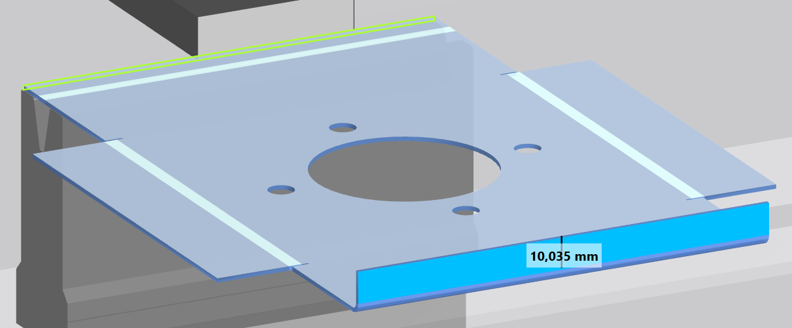
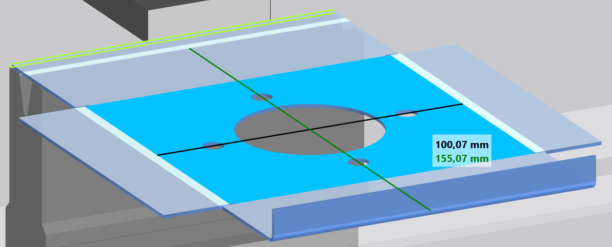
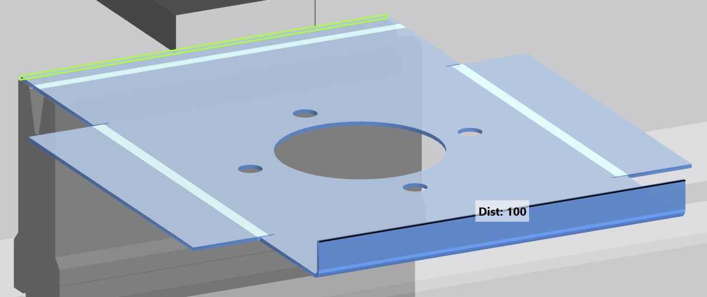
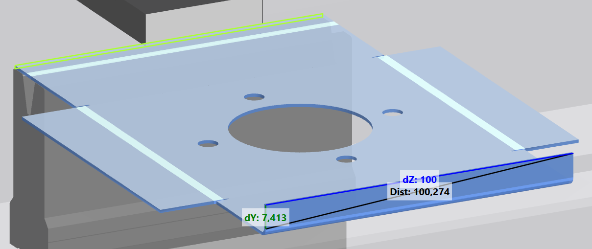
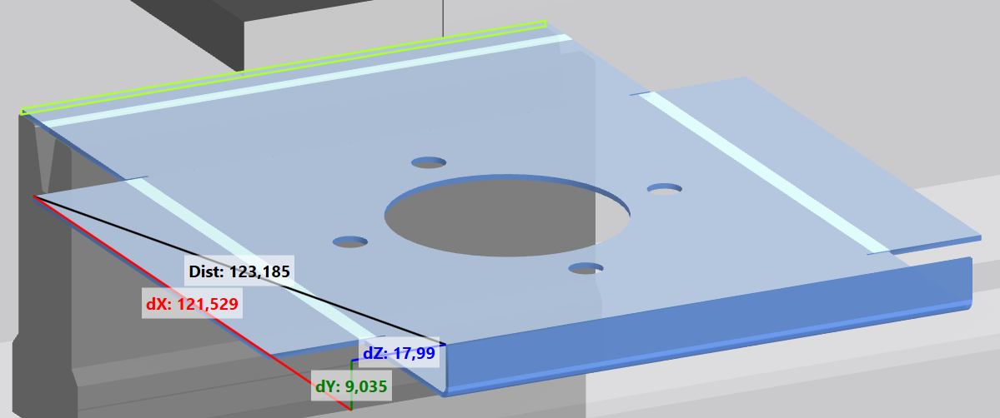

La barre d'affichage permet de contrôler l'affichage dans la fenêtre 3D. La barre d'affichage complète est disponible dans les menus Production et Modification de la technologie. Le menu Outils comporte une barre d'affichage réduite. La barre d'affichage comporte les rubriques suivantes :
 Fonctions de zoom
Fonctions de zoom
Cette vue permet de modifier les dimensions de la vue dans la fenêtre d'affichage.
-
 Agrandir la vue
Agrandir la vue -
 Réduire la vue
Réduire la vue -
 Centrage de l'étape de pliage activée aux dimensions de l'écran
Centrage de l'étape de pliage activée aux dimensions de l'écran - Centrage de la pièce à plier de chaque étape de pliage aux dimensions de l'écran
 Position
Position
Cette rubrique permet de modifier la position de la vue dans la fenêtre d'affichage. La vue est déplacée dans le sens opposé à l'indication de la direction des flèches.
-
 Déplacement de la vue à droite
Déplacement de la vue à droite -
 Déplacement de la vue à gauche
Déplacement de la vue à gauche -
 Déplacement de la vue en bas
Déplacement de la vue en bas -
 Déplacement de la vue en haut
Déplacement de la vue en haut
 Orientation
Orientation
Cette rubrique permet de définir l'orientation de la vue dans la fenêtre d'affichage.
- Vue de dessus dans la fenêtre 3D.
-
 Affiche la représentation dans la fenêtre 3D à partir de la gauche.
Affiche la représentation dans la fenêtre 3D à partir de la gauche. -
 Affiche la représentation dans la fenêtre 3D à partir de la droite.
Affiche la représentation dans la fenêtre 3D à partir de la droite. - Vue isométrique dans la fenêtre 3D.
 Affichage des outils
Affichage des outils
Cette rubrique contrôle l'affichage des différents composants de la machine.
- Active ou désactive l'affichage des outils inférieurs.
-
 Active ou désactive l'affichage des outils supérieurs.
Active ou désactive l'affichage des outils supérieurs. -
 Active ou désactive l'affichage de la machine.
Active ou désactive l'affichage de la machine.
 Affichage du processus de pliage
Affichage du processus de pliage
- Affiche le processus de pliage en cours avant l'exécution.
 Usinage
Usinage
Désactive et réactive la graduation d'angle. Si la graduation angulaire est masquée, vous ne pouvez pas créer de pliage supplémentaire en sélectionnant la pièce.
Toutes les fonctions de la barre de fonctions sont exécutables et les pliages sélectionnés peuvent être supprimés.
Info: Le bouton se trouve dans l'Editeur de profilé.
 Mesure
Mesure
- Affiche la longueur du côté sélectionné dans la vue 3D.
Fig.: Indication de la longueur pour un côté

Pour les lignes de pliage disposées perpendiculairement, la dimension des deux longueurs de côtés est affichée (A).
Fig.: Indication de longueur pour plusieurs côtés

-
 Mesure la distance entre deux points dans une pièce en trois dimensions.
Mesure la distance entre deux points dans une pièce en trois dimensions. - Si les deux points se trouvent sur un axe, une seule distance est affichée.
- Si les deux points se trouvent sur un plan, trois distance sont affichées.
- Si les deux points sont dans la pièce, quatre distances sont affichés.
Fig.: Indication de longueur sur un axe

Fig.: Indication de longueur sur un niveau

Fig.: Indication de longueur dans une pièce
